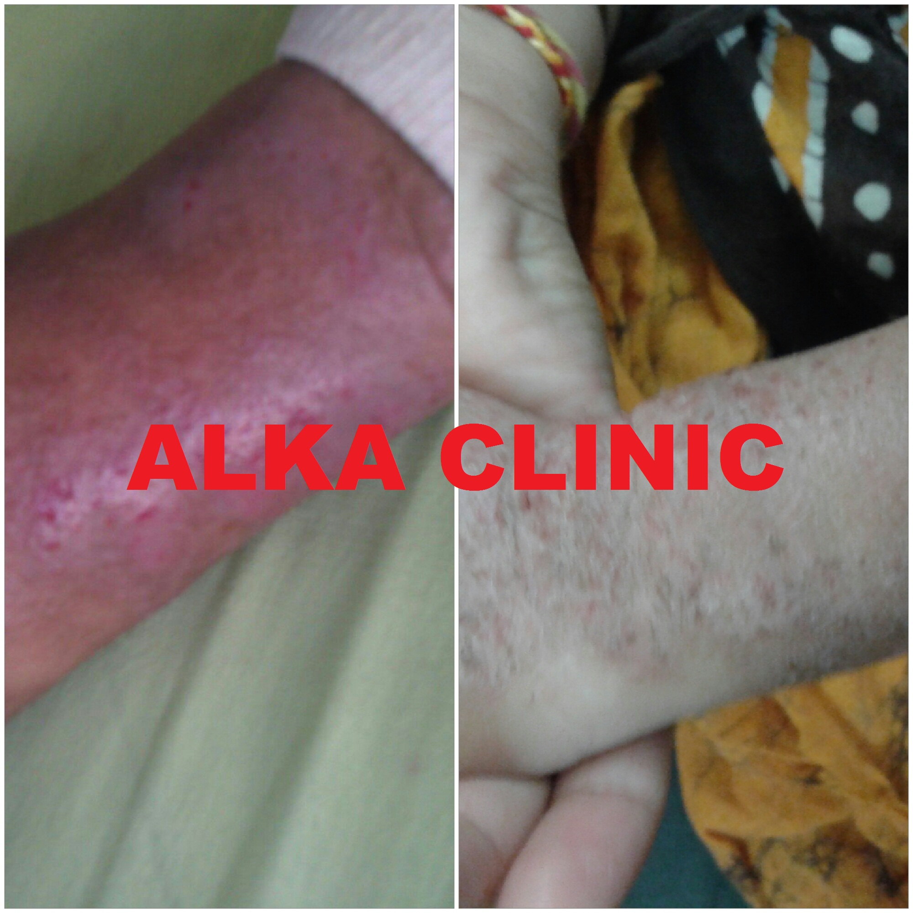
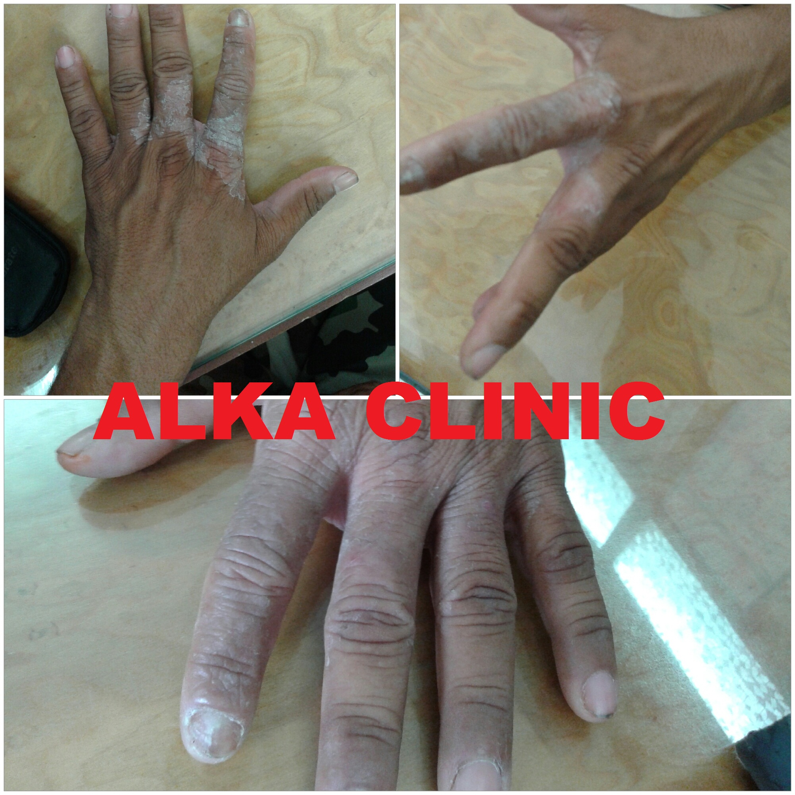
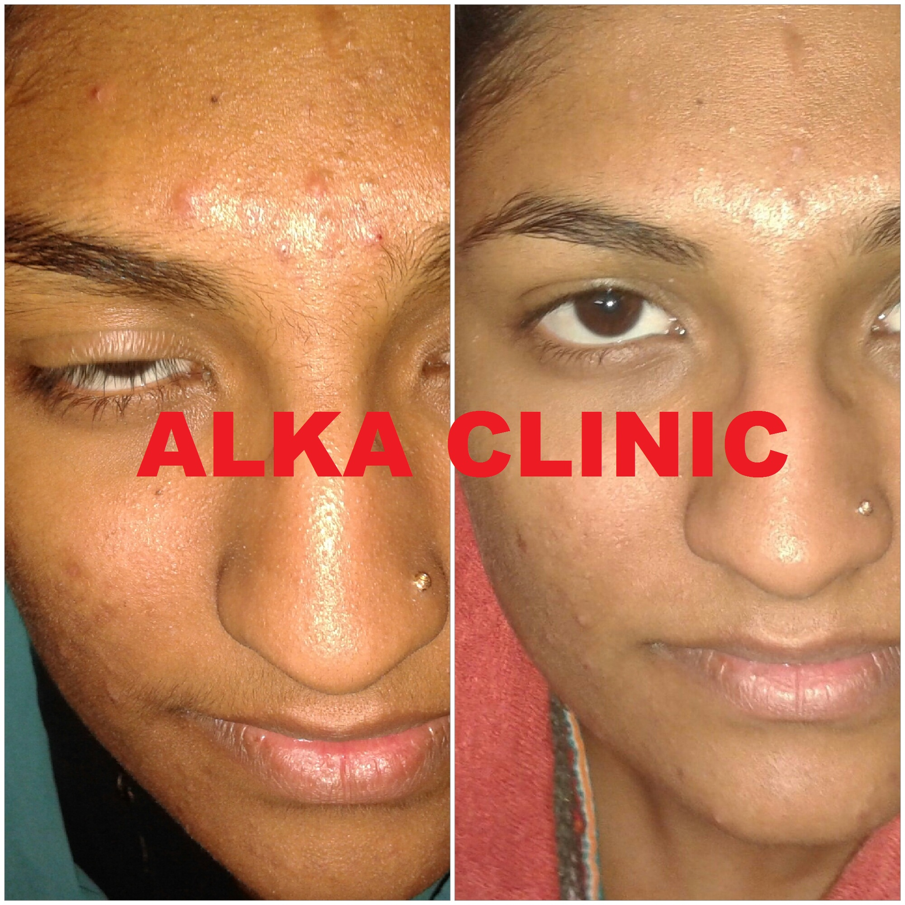
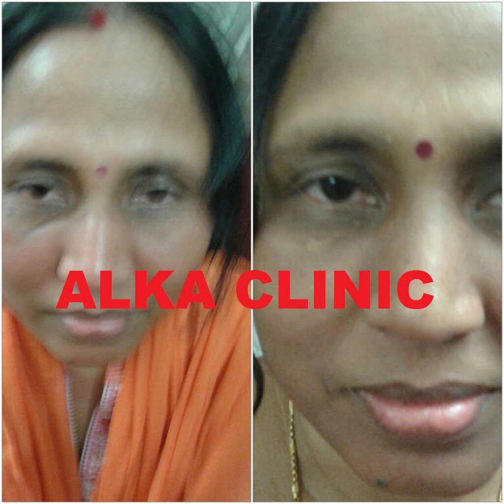
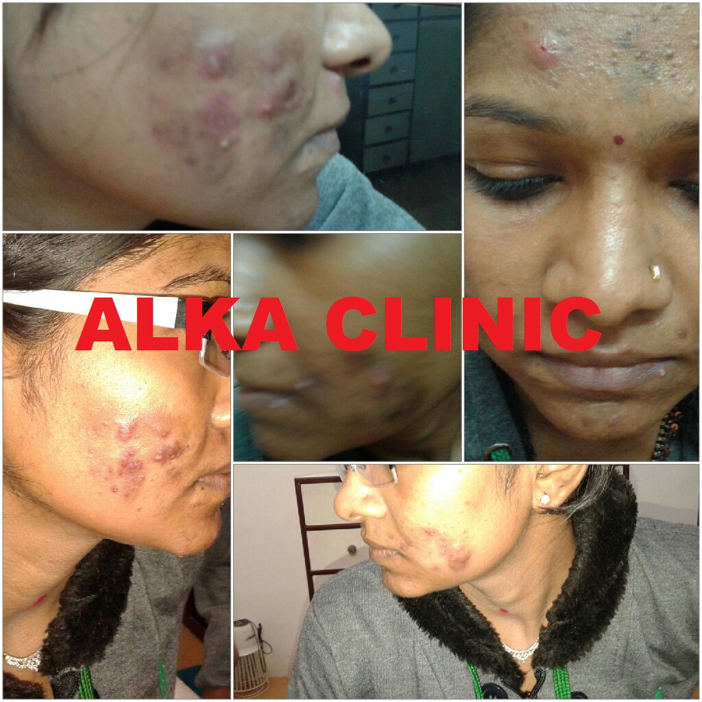

Documented Clinical Before & After Cases
Click on any case image below to view the high-resolution clinical photograph in detail.

Chronic Plaque Psoriasis of Lower Extremities
Severe hyperkeratotic, itching, red scaly plaques covering both shins and lower legs. Treated with personalized constitutional homeopathic medicine without steroid dependency.
Book Consultation for Psoriasis
Generalized Back Psoriasis & Scaly Eruptions
Widespread inflammatory patches across the lumbar and mid-back region causing intense irritation and flaking. Achieved uniform skin texture normalization.
Consult Dr. Nikhil Shah
Allergic Contact Dermatitis & Wrist Eczema
Acute erythema, vesicular eruptions, and burning distress on the forearm and wrist following allergic sensitization. Restored skin barrier and immune balance.
Book Consultation for Allergies
Pediatric Chronic Leg Eczema & Lichenification
A child suffering from hyperpigmented, thickened, intensely pruritic patches over both legs. Fully resolved without toxic immunosuppressants.
Inquire About Child Treatment
Infantile / Toddler Severe Facial Dermatitis
Distressing facial atopic eczema with oozing, raw cheeks, and ear lesions in an infant. Achieved 100% cure and baby's joyful radiant smile.
Consult for Baby & Kids Skin
Hand, Finger & Interdigital Web Eczema
Chronic peeling, dry cracking skin, and itching between fingers and dorsal hand. Restored skin flexibility, hydration, and comfort.
Book Hand Eczema Treatment
Severe Facial Acne Vulgaris & Pustules
Painful recurrent nodular acne, inflamed pustules, and post-inflammatory erythema across jawline and cheeks. Restored balanced clear complexion.
Get Clear Skin Consultation
Forehead Papulopustular Acne & Pimples
Clusters of painful forehead bumps, comedones, and sebum congestion in a young woman. Cleared completely without drying or bleaching agents.
Inquire About Pimples & Acne
Melasma, Pigmentation & Periorbital Fatigue
Stubborn facial dark spots, uneven pigment patches, and periorbital hollow dark circles rejuvenated naturally through internal holistic healing.
Consult for Pigmentation
Nodulocystic Facial Acne & Deep Inflammation
Chronic refractory nodulocystic facial lesions with secondary infection and risk of deep pitted scars. Documented multi-month clinical remission.
Book Acne Evaluation
Lichen Planus Hypertrophicus & Pigmentosus
Chronic auto-reactive violaceous plaques and thick hyperpigmented warty eruptions over the ankle and foot. Long-term remission achieved.
Consult for Lichen PlanusScan QR to Pay Consultation Fee
Dr. Nikhil Shah • Nikhil Alka Clinic

UPI ID: alkaclinic1-1@okicici
Accepts Google Pay, PhonePe, Paytm, BHIM & all UPI Apps